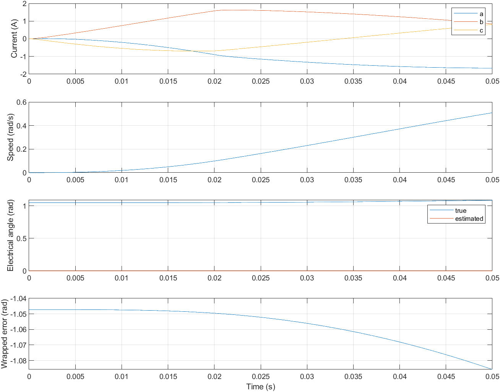

LIU ZILI
Electrical Engineering and Automation
My undergraduate thesis investigates rotor position estimation in an interior permanent magnet synchronous motor at standstill and low speed.
View simulation results
Project
Undergraduate thesis
Low-Speed Rotor Position Estimation for an Interior Permanent Magnet Synchronous Motor Using Pulsating High-Frequency Signal Injection
- I built an interior permanent magnet synchronous motor (IPMSM) simulation in MATLAB/Simulink.
- I implemented separate modules for current signal processing and rotor electrical angle estimation.
- I compared the estimated angle with the model reference with high-frequency injection enabled and disabled.
 IPMSM cross section
IPMSM cross section
Structural reference from Caruso et al., Energies (2022), Fig. 2. CC BY 4.0.
Simulation Results
MATLAB/Simulink0–0.05 s
The two runs show phase currents, rotor speed, rotor electrical angle and wrapped angle error over the same simulation interval.
Injection On

The estimated electrical angle approaches the model reference, and the wrapped angle error falls close to zero over the displayed interval.
Open full-size injection-on plot
Injection Off

The estimated electrical angle stays at zero over the displayed interval, while the model reference remains near 1 rad.
Open full-size injection-off plot
Technical Skills
- MATLAB/Simulink modeling
- Built the IPMSM model and checked simulated signals at the module outputs.
- Current signal processing
- Implemented the current processing module and compared phase current waveforms across the two runs.
- Rotor electrical angle estimation
- Implemented the estimator and used wrapped angle error to compare its output with the model reference.
- Simulation data analysis
- Read the current, speed and position traces together to interpret the results under the tested conditions.
Areas of Expertise
- Low-speed motor position estimation
- I break the task into motor modeling, current response processing and angle estimation, then check the output at each step.
- Comparative simulation for motor control
- I compare injection-on and injection-off runs against the model reference, using the wrapped angular error to assess tracking.